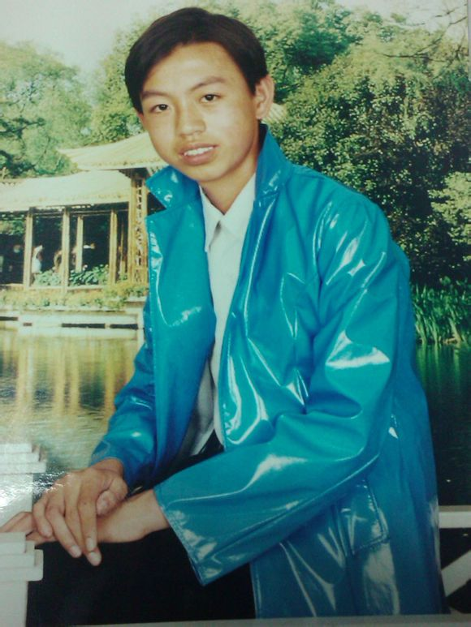
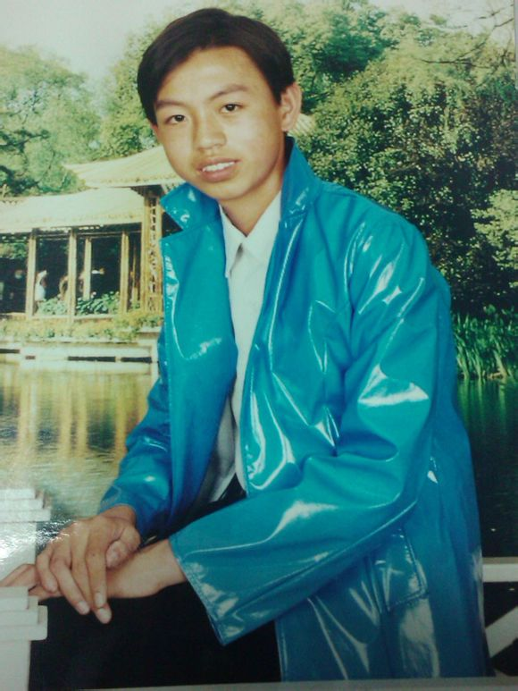

寻亲启事
寻亲启事 全啸、男、1987年6月生，身高170cm左右。陕西、榆林、府谷县人。陕北口音，也说普通话。于09年7月进入延安大学，就读工商管理专业。10月与家人失去联系至今下落不明。 在弟弟失去联系的这些日子里，妈妈整日忧心忡忡，以泪洗面。 希望好心人能帮助我们，有消息与我们联系。万分感激、跪谢！ 若哪位好心人能提供线索帮助我们，我们一辈子都不会忘记，一定会重重酬谢。 请您留意下一周边的人，您的每一次用心，都会给我们带来一次希望。好人一生平安。
...
联系电话：13601083144
QQ：625064709
邮箱：xunquanxiao@163.com
微信：tecace
在这里我们全家人恳请您的帮助，如果可以请帮帮我们。方便的话帮我们转发一下消息。
全啸照片


 


寻弟弟全啸
被寻人姓名：全啸 被寻人性别：男 被寻人原籍：陕西省榆林市府谷县 被寻人年龄:27岁 1987年6月28日生 被寻人特征：170cm左右，体态中等，带有眼睛。走时带黑色行了包。说话陕北口音，会说普通话。 失散时间和地点：陕西延安、延安大学 其他相关信息：09年在哈尔滨工业大学转学到延安大学一个多月后与家人失去联系。 寻找理由:弟弟失踪，全家都很着急。妈妈思念过度，整日以泪洗面，多次病倒住院。 发帖人相关信息以及联系方式:联系人：全忠，电话：13601083144 微信号：tecace 另外：对各位的帮助感激不尽，感谢各位的公益支持。您的每一点付出都给我们带来新的希望！
寻弟弟全啸：全啸快回来吧，又快过年了，全家盼望着早日找到弟弟。今年能过个团圆年。
寻弟弟全啸：全啸快回来吧，又快过年了，全家盼望着早日找到弟弟。今年能过个团圆年。 弟弟走的这几年家里境况很不好。全家人每日都在想着。奶奶已卧病在床两年多了，爸妈也因为思念过度，经常生病。尤其是妈妈这几年断断续续一直在用药，今年还住了几次医院。 快回来吧弟弟。 若有遇到长相相似的，请好心人伸出援助之手，帮帮我们。我代表全家感激您。找到后可提供不低于五万元的酬金作为答谢。
撕心裂肺——慈母寻子泪
全啸、男、24岁,身高170cm左右，身份证：612723198706281612。陕西、榆林、府谷县人。陕北口音，也说普通话。在 弟弟失去联系的这些日子里，妈妈整日忧心忡忡，以泪洗面。希望好心人能帮助我们， 有消息与我们联系。万分感激跪谢！ 若哪位好心人能提供线索，我们一辈子都不会忘记 ，一定会重重酬谢。请您留意下一周边的人，您的每一次用心，都会给我们带来一次希 望。好人一生平安。电话：13601083144 哥哥 弟弟： 09年冬天你于延安大学与家人失去联系。 是什么让你有家不能归？ 弟弟：你是否受到别人的控制？ 夜深了、天冷了，不知你在哪里睡？ 你的脸上是否挂着 无助的泪。 没有你 我们的心已碎。 三年了、没有家人的日子不知你怎样面对？ 家人心中时刻担心 你的安危。 没有你 我就要崩溃。 妈妈满世界寻找你 整夜无法安睡。 爸爸历尽艰难踏遍 千山万水寻找你。 快回来吧 弟弟！ 别让妈妈的天空 一片黑。 满世界呼唤你 撕心裂肺。 受尽折磨已经 心力憔悴。 快回来吧 弟弟！ 别让妈妈的世界 泪雨飞。
寻陕西省府谷县-全啸（一位母亲的寻子泪）
“儿啊，快回来吧，妈想你呀！！！” 这是我可怜的母亲发出的撕心裂肺的呼唤，只因弟弟突然间从学校失踪，至今杳无音讯。 我们家在陕西省榆林市的农村，家里有奶奶，爸爸妈妈，还有我们三兄妹，本来是一个幸福快乐的家庭，但是这美好的幸福却在2009年10月戛然而止。 弟弟在家排行老二，名叫全啸，今年24岁，从小乖巧聪明，学习成绩优秀，而且性格也极好，成熟稳重，度量很大，很少与人有什么矛盾，是大家公认的好孩子。2007年9月，弟弟考入哈尔滨工业大学工商管理专业，但因其在大二期间患头痛病而休学，导致英语成绩不理想，哈工大校方要求其转学。无奈之下，家里只好费劲千辛万苦，筹集好几万元，又托人找关系，想将弟弟送入离家不远的延安大学，只为圆了弟弟的大学梦。 2009年9月初，延安大学教务处声称已经收到哈工大寄来的学籍档案，弟弟可以顺利报到了。于是，弟弟拿着学费去了延安大学。不幸就这样降临了…… 进入延大还不到两个月，家里突然联系不上弟弟了，刚开始还以为是弟弟手机临时关机，就托同学找。但又等了一段时间，同学也没联系到。到11月的时候我跑到学校找弟弟，结果扑了空，才知道弟弟已近失踪了。我爸爸坐不住了，心急如焚地前后两三次跑到延大去找，当时距离弟弟最后一次给家里打电话已经快一个月了。到了学校，爸爸多方寻找未果，只能向延大校方求助，原本老实厚道的爸爸并没有想过向校方追究责任，只是希望校方能提供一点线索，能协助他尽快将儿子找到。然而，没有想到的是，校方不仅无法答复弟弟失踪的大致日期，甚至不承认弟弟是他们的学生。 但是当时从他们的教务系统里明明就可以查到弟弟的详细信息啊，怎么能说不是他们学校的学生呢？！这就是学校的管理制度，学生失踪近一个月了，校方不仅不知情（或许知道了但故意隐瞒），不跟学生家长联系，还为了推卸责任否认学生不是自己学校的。 虽然当时爸爸怒火冲天，但是想到弟弟毕竟是大人了，也许会自己回来，另一方面，害怕把事情闹大了，弟弟回到学校后在老师同学面前抬不起头来，也就没跟校方纠缠，而是联系亲朋好友，自己寻找。 自从得知弟弟失踪后，妈妈的心都碎了，每天晚上都睡不好，终日以泪洗面，神情恍惚，茶饭不思，头发在短短几天内几乎全白了，而且一年内好几次病倒住院，直到现在还在吃药治疗。她还常常站在家门前的山头痴痴远眺，希望有一天她的儿子能从远方回来。 逢年过节的时候，妈妈更难受，看到别人家快乐幸福，妈妈就忍不住想起自己失踪的儿子，想知道他到底在哪儿，到底出了什么事儿，让她的儿子至今下落不明。逢年过节，妈妈更是悲痛欲绝、泪流满面。大年三十晚，当一家人坐下吃团圆饺子的时，妈妈夹起第一个饺子就已近泣不成声，就说孩子不知道今天能不能吃的饱，穿的暖？ 妈妈在不知道该怎么继续寻找的时候还多次去各地求神拜佛，希望神明能保佑他的儿子早日归来，但是希望却在一次一次地失望中破灭了，妈妈的精神几乎要崩溃了。 一年半过去了，我们全家通过各种方式寻找，但是依然没有任何音讯，爸爸妈妈都快撑不住了，于是不再有种种顾虑，希望通过网络、媒体、通过社会上的好心人帮她找到儿子。现在什么都不重要了，只要能找到儿子她什么都愿意做。 在这里我代我们全家真心地恳请各位好心人，还有延大的同学和老师们，如果你们发现了跟照片上相似的男子，或者知道其他什么线索，希望你们能通知我们，您的每一次用心对我们来说都是一次希望，同时，我希望执法部门，还有媒体能关注此事，以事实为根据，本着尊重学生，对学生家长负责的原则，做好教学管理，做好孩子的监护责任。杜绝类似事件再次发生，同时促使延安大学承担过失行为。 最后，若有好心人能帮我们找到弟弟，或提供有用线索。我们必将重谢，哪怕倾家荡产！ 全啸，男，24岁，身高170cm左右。陕西省榆林市府谷县人。陕北口音，会说普通话。2009年10月在延大与家人失去联系至今下落不明。 联系电话：13601083144 全忠 QQ：625064709 邮件:qz@quanzhong.me （另外，希望无聊的人不要再骚扰了，我们已经经不起那样的折磨） （如果您能帮我们找到弟弟，我们一定会实现我们的承诺。答谢恩人就算是倾家荡产，负债累累，我们也在所不辞。说道做到。）